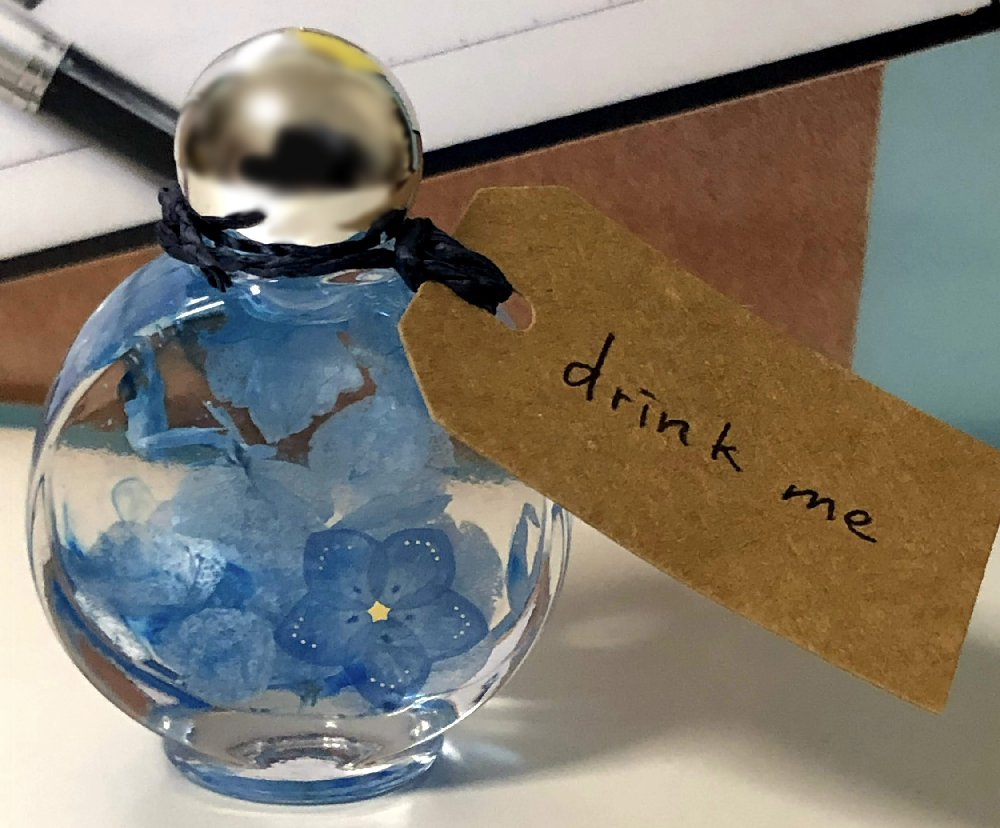

その他

左の画像は、４年ほど前に作ったものになります。
働き始めてからは、かなり忙しくなってしまったり慌ただしい日々が続いていたので
かなり古い画像になってしました。この時期は、学生ながらハーバリウムにハマりたてで
友達と誘って作ってみたり、一人で黙々と作っていました。個人的に一番苦労したのは、
引っ越しで持ち運ぶときとハーバリウム用のオイルの保存です。
液体なので、結構漏れます。
なので、傾ければ漏れてしまいます。
当時の私は、自分で
抱えるぐらいしか方法が思いつきませんでした。
無計画に量産するのもよくないなと、心の中で深く反省しました。
左の画像を見ての通り、結構一本一本の違うテーマで作っているように見せて
青色系統のハーバリウムばかり作っています。無心で作ることが多かったので
無意識のうちに偏ってしまったのでしょう。もっと言うと、小瓶は黒色で
攻めたのですが、花がうまく見えてなくてあまりハーバリウムの良さを発揮してません。
今度は、青色と黒色以外のテーマカラーで作成して、リベンジしたいところですね。
右の画像も、ハーバリウムの一つです。瓶の蓋って結構反射することが多くて、
その中でもかなり反射していたので塗りつぶしたりぼかしたりしています。
本当は、ハーバリウム以外の画像を用意したかったのですが、
友達のプレゼント用だったり、友達のオリジナル設定をお借りしたものが多く
今回はお蔵入りとさせていただきました。また、いいものがあれば入れ替えようかと
考えています。特に、ハロウィンのような雰囲気が個人的に
好きでハロウィンっぽいアクセサリーとか作ってみたり、いつも簪を
使っているので、簪でなにか作れたらなとも思ってます。
右のハーバリウムは、アリスモチーフで作成したものです。
小さいころから、不思議の国のアリスもかなり好きで、よく
読んでいました。今でも、アリスモチーフのものが出ると買いたくなるほど
好きです。ハーバリウムでも作ってみたい！と思い、不思議の国に
出てくる「drink me」の小瓶風に仕上げました。
